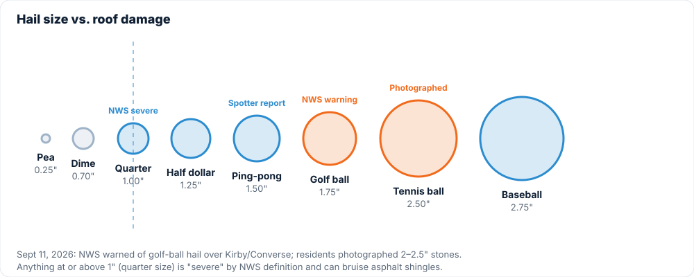

If you're replacing a roof after a hail claim, you'll be asked whether you want to upgrade to Class 4 impact-resistant shingles. Here's a straight answer on what you're buying.
What "Class 4" means
UL 2218 is a test where a 2-inch steel ball is dropped from 20 feet onto a shingle, twice in the same spot. If the shingle doesn't crack, it passes Class 4, the highest rating. A 2-inch steel ball hits harder than a 2-inch hailstone, so it's a conservative test. Class 4 shingles use a more flexible asphalt blend (often SBS-modified) and sometimes a reinforced mat.

What they cost
Roughly 10 to 25 percent more for materials than a standard architectural shingle from the same manufacturer. On a typical Converse roof that's usually a few hundred to a couple thousand dollars over the standard product. If you're on an insurance replacement, that upgrade cost is yours, not the carrier's.
The insurance discount
Most Texas carriers offer a premium discount for a documented Class 4 roof, commonly in the 5 to 30 percent range on the wind/hail portion of your premium. Ask your agent for the exact figure before you decide. On many policies the discount pays back the upgrade within a few years.

When it's worth it
- You plan to stay in the house more than five years.
- Your roof has been replaced for hail more than once already.
- Your carrier offers a meaningful discount without a cosmetic exclusion.
When it's not
- You're selling within a couple of years.
- Your carrier's discount is small or comes with a cosmetic exclusion you're not comfortable with.

We install Class 4 lines from the major manufacturers and will price both options side by side on your estimate. Get a quote or call 956-465-6045.